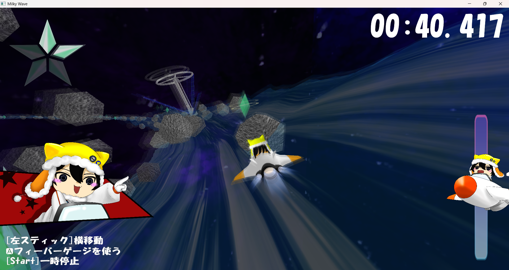
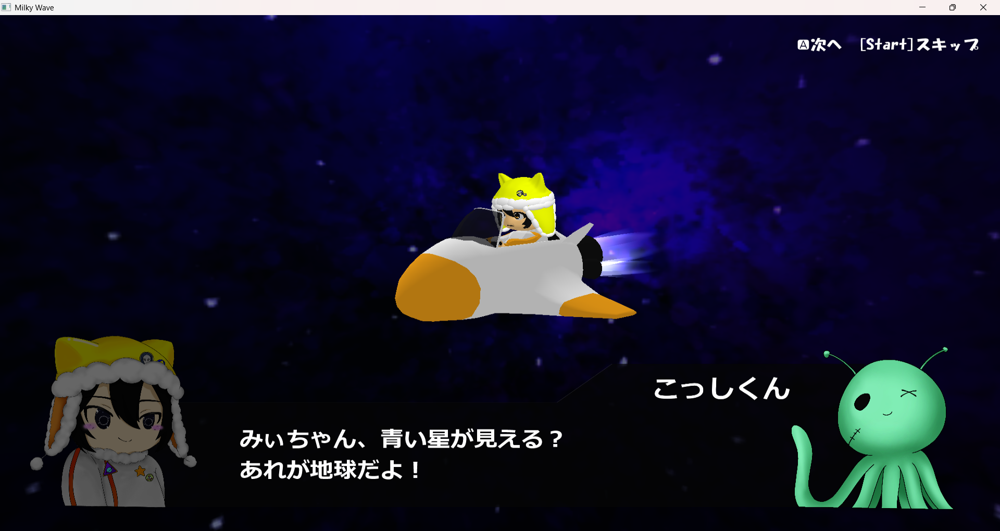

-
銀河激流ミルキーウェーブDirectXC++Maya
- 


- 
- 開発環境／プラットフォーム
- Windows、DirectX、C++、Visual Studio、Maya、Clip Studio
- 制作期間
- 2024年11月1日～2025年2月28日（約4カ月）
- チーム構成
- プランナー3名、プログラマ7名、デザイナー3名
- 担当
- プログラマ統括、フレームワーク、メインゲームロジック、アセット制作、各種演出
- ソース／実行ファイル
- https://github.com/NgaiManChun/MilkyWave
- デモ動画
- https://youtu.be/_FClnpZHCsM

🔹 概要
『銀河激流ミルキーウェーブ』は、「天の川の川下り」というコンセプトから生まれたタイムアタックレースゲームです。 プレイヤーはねじれた宇宙コースを滑走しながら、アイテムを集めてゲージをチャージし、ブースターで一気に加速する爽快なゲーム体験が特徴です。 波打つコースに船が傾く挙動や浮き沈みの表現など、物理的なリアリティにもこだわりました。
以下、チーム内の説明用資料
プランナー向けのコースの仕組みと作り方の説明：
Google Driveスライドアセット変換ツールReadme：
GitHub🔸 こだわり・チャレンジ
波打つコースと船の浮き沈み
コースに沿って重力の導線を設定し、位置によって重力方向が変化。 さらにコースの当たり判定をエリア分けし、表面法線を使って船を細かく傾けながら波の頂点で飛ばし、再び重力と水の浮力でバウンドさせることで、船の自然な浮き沈みを演出しています。使いやすさを重視したフレームワーク設計
本作は、これまで複数のプロトタイプで培ってきた自作フレームワークを3Dゲーム向けに拡張し、チームにも提供した作品です。使いやすさを重視し、デモシーンやサンプルの用意、チーム内での説明会も実施しました。オリジナル3Dアセット変換CLIツール
FBXファイルから、モデル・アニメーション・インスタンス座標の3種データに変換するツールを開発。シンプルで再利用性の高いデータ構造とすることで、メモリ使用量を抑えながら高速な読み込みを試みました。開発と運用の効率化
上記の専用ツールを用いてワークフローを構築しました。デザイナーとプランナーは慣れ親しんだMaya上でモデルとコースを設計し、ツールでモデルデータ・コリジョン設定・インスタンスの配置情報などのゲームデータに変換しています。 加えて、各種パラメータはCSVで管理しており、非エンジニアでも柔軟な調整が可能にしています。ボーンアニメーションの実装
キャラクターに3Dボーンアニメーションを導入し、滑らかで自然な動きを実現。スムーズなコースプレビュー
マルチスレッド処理を用いて、ステージ選択中のコースプレビューを非同期で読み込み。テンポを損なわないユーザー体験を提供しています。各種演出の実装
タイトル画面でのキャラクターの目パチや、流れ星を使ったシーン遷移、船の翼が水面に触れたときの星型の水しぶき、 加速時のブラー効果、アイテム取得演出の3D→2Dの連動、隕石衝突時の速度と角度に応じて飛ばし具合の変化、加速時のキャラの叫びカットインなど、細部にわたってゲーム体験を盛り上げる演出を多数実装しました。コントローラーの切替えとジャイロ操作対応
本作はキーボードのほか、XInput対応のコントローラーとDualSenseコントローラーに対応しており、プレイ中でも自由に切り替え可能。 画面上の操作ガイドも使用中のデバイスに応じて動的に変化します。 さらに、DualSenseコントローラーではHIDレポートに解析によるジャイロ操作の対応を実装しています。